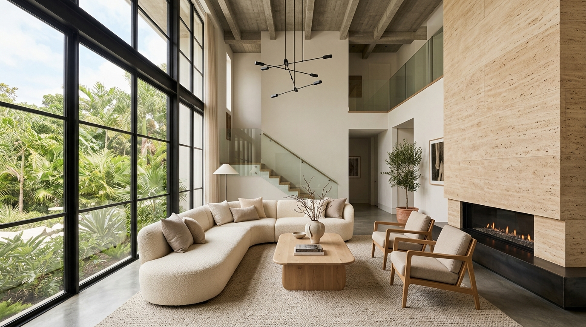
Commissions & Atelier Archive
Spaces & custom furniture sculpted with tactile poetry
Curated Archive
Explore our landmark spaces & bespoke creations
Each commission represents a rigorous dialogue between client, topography, and tactile materiality — from complete architectural wings to single-edition bespoke furniture pieces.
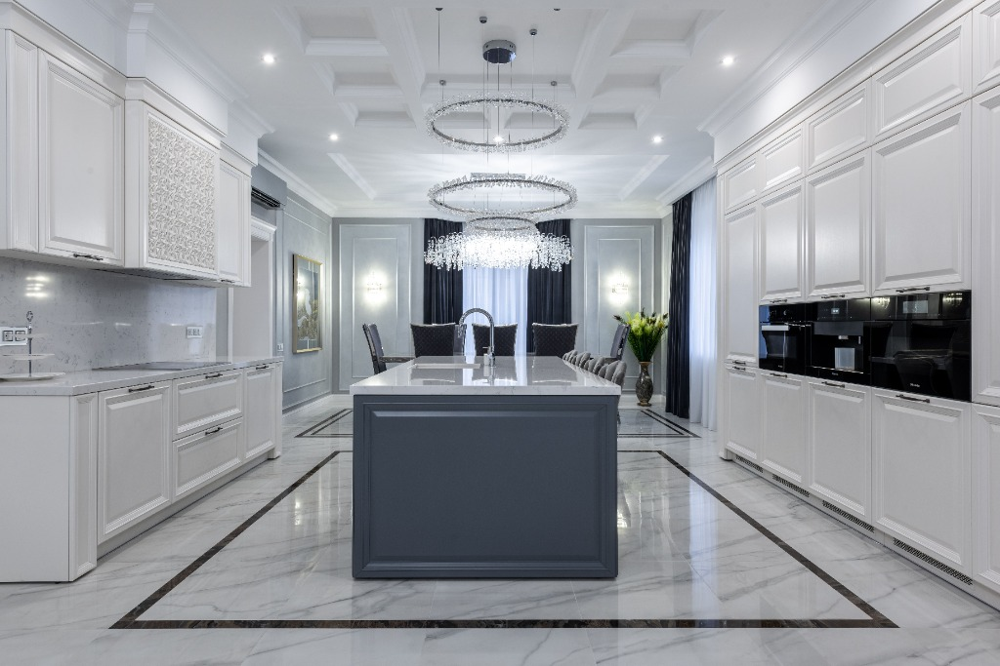
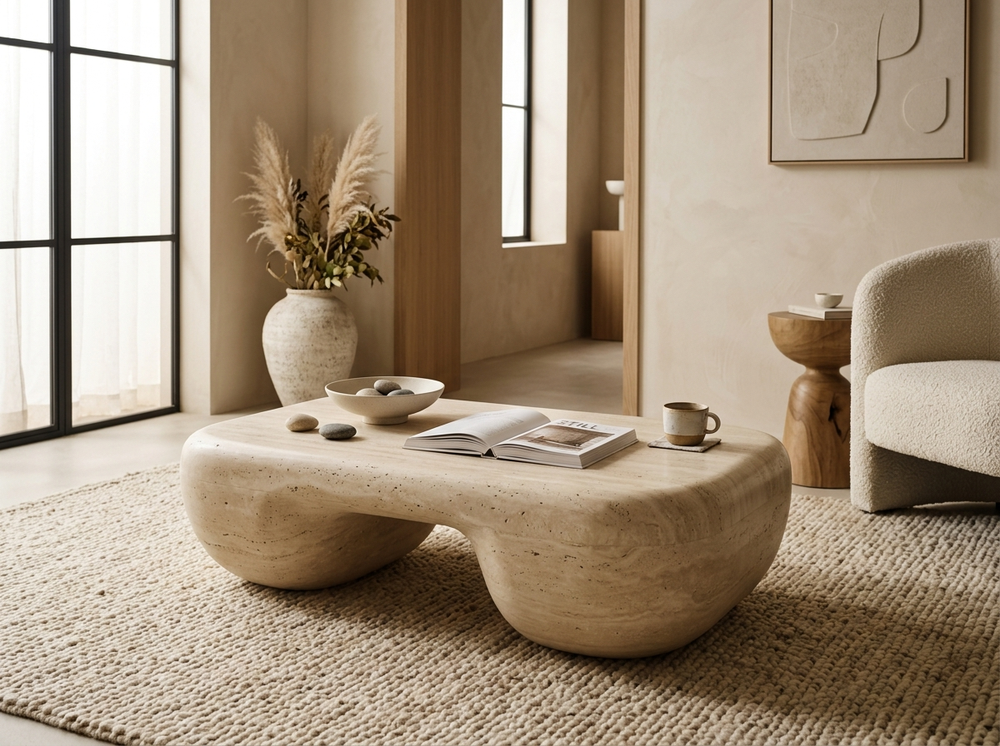
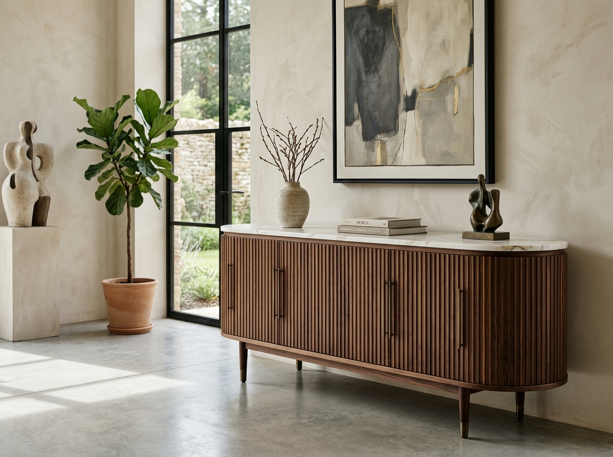
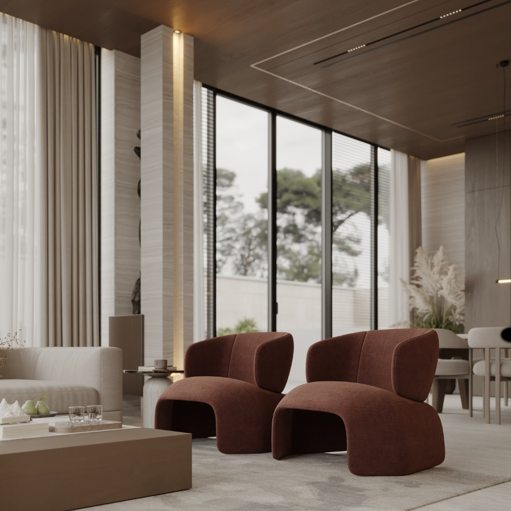
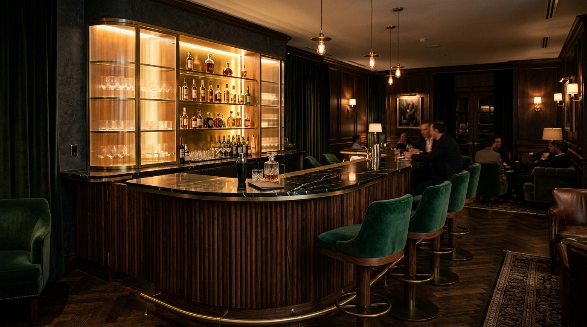

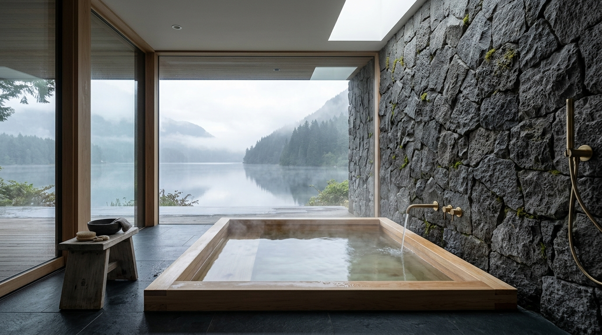
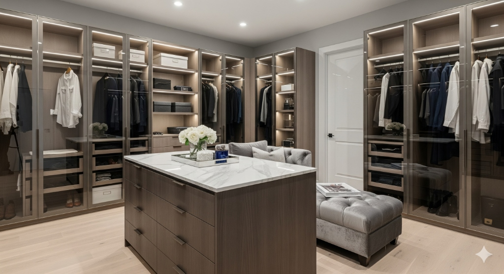
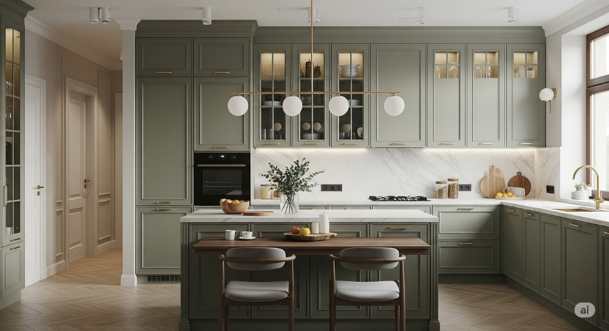

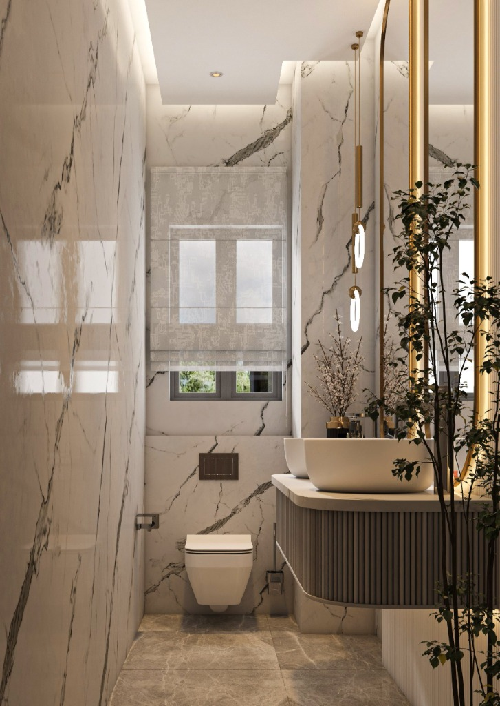
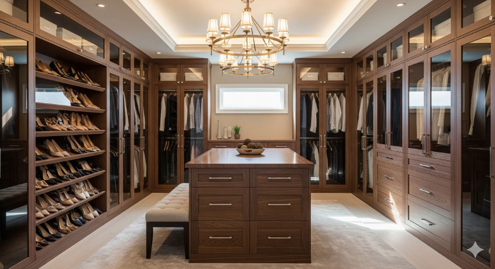
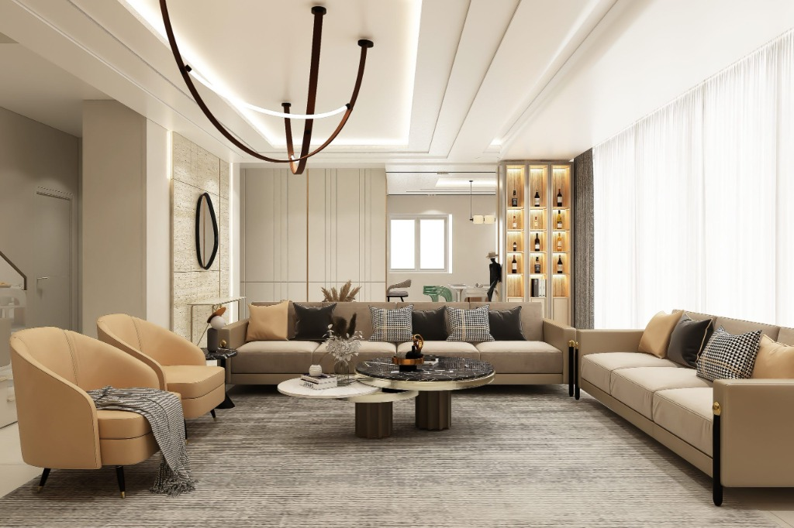
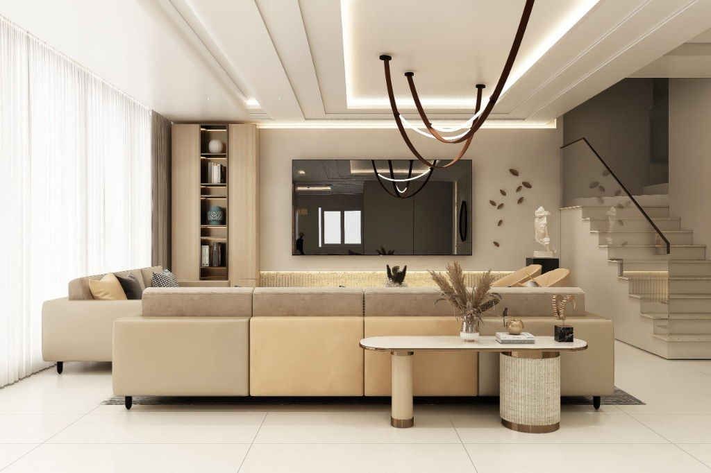

The Atelier Collection
Bespoke Furniture & Architectural Millwork
We believe exceptional spaces cannot rely entirely on catalog furnishings. Our private furniture atelier designs limited-edition and one-of-a-kind pieces crafted from solid stone blocks, rare timber slabs, hand-patinated bronze, and tactile natural textiles. Every piece is tailored specifically to your home’s architecture.
The Monolith Travertine Table
Carved from a monolithic block of honed Italian travertine. Soft, organic contours soften the stone’s monumental weight, creating an arched bridge silhouette that balances negative space with enduring permanence.
Rive Gauche Walnut Credenza
Hand-milled American black walnut with subtle acoustic vertical fluting and rounded pill-end radius corners. Topped with a single bookmatched Calacatta Viola marble slab and custom hand-cast bronze hardware.
The Sedona Terracotta Arch Chairs
Architectural low-profile lounge armchairs sculpted in tactile terracotta mineral bouclé. Defined by continuous arching bridge legs, ergonomic contoured backrests, and seamless monolithic tailoring.
Ethical Solid Hardwoods
We harvest zero fresh native forest trees. All timber is sustainably salvaged, FSC certified, or reclaimed aged stock seasoned for stability.
Single-Block Extraction
Travertine, limestone, and volcanic basalt blocks are individually selected at source to guarantee continuous vein matching and structural integrity.
Artisan Guild Collaboration
Partnering with third-generation joiners and metalworkers across Kenya and Europe. Traditional mortise-and-tenon joints and hand-rubbed finishes.
Numbered Studio Editions
Each custom furniture commission is engraved with its individual atelier serial number and accompanied by an archival certificate of authenticity.
Our Approach
Every project begins with deep listening & materiality
We don't apply a formulaic signature to every commission. Each space and furniture object is a tailored response to our client's rituals, their heritage, and the specific orientation of natural light. This is why no two SILK & STONE environments are ever identical.
Commission A Private Project →Residential
Private country estates, contemporary urban villas, and heritage penthouses.
Custom Furniture
Monolithic stone tables, fluted walnut credenzas, and bespoke millwork suites.
Retail & Flagship
Slow fashion boutiques, jewelry galleries, and artisan flagship showrooms.
Hospitality & Spa
Private members clubs, cocktail lounges, and contemplative thermal bathhouses.
Ready to bring your space to life?
From comprehensive spatial architecture to custom one-of-a-kind furniture commissions, we craft every detail with uncompromising care.
Schedule Studio Consultation